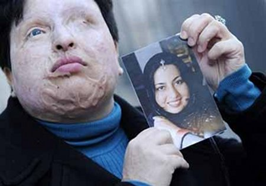

پذيرش > سایت نوشته ها > به دخترم، آمنه بهرامی افتخار می کنم


 به دخترم، آمنه بهرامی افتخار می کنم به دخترم، آمنه بهرامی افتخار می کنم
11 مرداد 1390 - دکتر ناهید توسلی - نسخه قابل چاپ
باید «مادر» باشی تا با تمام وجودت بفهمی این افتخار یعنی چه!
باید «دختر»ی جوان باشی، زیبا، دانشجوی رشته برق، غرق در رویاهای آینده، یافتن کسی برای زندگی که خود او را برگزینی و او نیز تو را.
باید «انسان» باشی، نه که تنها چشم و گوش و زبان و دست و پا و دل و آرزو داشته باشی.
باید «انسان» باشی، اما از جنس آمنه بهرامی، تا گرچه دیگر او آرزوی دیدن جهانی از زیبایی ها و رنگها و آسمان و زمین و آفتاب و مهتاب و ستارگان و سبزه و گُل و بلبل و پرستوهای بهاری را، سپیدی سحر و طلوع و غروب خورشید را، حتی سیاهی شب را، مادر را و پدر را، دوست را و بستگان را... در خویش دفن کرده باشی!
چه می گویم، تا دیگر نه نور را و نه نیز ظلمت را از هم تمیز دهی،
باید همه اینها باشی. چیزی از جنس «زن/ مادر» اسطورهای/ تاریخی. از جنس کهن الگوی «مادر عُظمی» (Tellus Mater) تا، در عین اینکه نتوانی نور را از دیدگان «آن» که تو را به سیاهی همه روزها و شب ها و به فریب «عشق» نرینه دعوت کرده است، بگیری؛ اما یکبار دیگر فرضیۀ «صلح زن/مادرانه» را که ریشه در آگاهی انسان هبوط کرده دارد ثابت کنی.
باید «آمنه»* باشی، دختری زیبا، جوان، با دنیایی از رویاها و آرزوها و آمالی برای آینده ای که می انگاشتی رنگین کمانی هفت رنگ خواهد بود. «آمنه»ای، چشم بربسته بر همۀ دیدنی های جهانی که بسیاری دیگران برای دیدن اش یکدیگر را چون گرگ می درند.
خبر شوک آور بود و تلخ، در آبان 1383 و شوک آور و شیرین، در مرداد 1390.
تو را می ستاییم، «آمنه»، تو را که در ظلمت سیاه دیدگانت، اما با دل نورانی و قلب همیشه روشن ات، نور دیدگان مجید را به او بازگرداندی! نور دیدگان «آن»که نور دیدگانت را ستاند. تا که شاید، با نور دیدگانی که به او هدیه کردی، با چشمِ دلی بازتر و روشن تر، سیاهی درون دل تیره و تار و ظلمانی اش را با سپیدی آشتی دهد!!
تو را می ستاییم، «آمنه»، تو که کاری عیساگونه کردی تا صلیب گناهآلود ناآگاهان و نادانان را بر دوش کشی.
تو را می ستاییم، «آمنه»، تو را که دل سپید و نورانیات ما را – و آرزو دارم جهان ما را – از سیاهی خشونت و کینه و نفرت و از همه مهم تر «انتقام سیاه» به روشنایی سپیده دم سحر و بامداد «جهانی سرشار از صلح و رحمت» رهنمون گردد.
تو را می ستاییم، «آمنه»، و با تمام قد در برابرت سر تعظیم فرود می آوریم، ما زنان و ما مادرانی که «دوست داشتن» می کاریم و «صلح» درو می کنیم.
تو را می ستاییم «آمنه»، اما اینبار به خاطر کوششی که برای احقاق حقوق خودت میکنی، حقوقی که حقوق زنان نیز هست. برای دعویات به برابربودن دیهات با دیه یک مرد به عنوانی انسانی که خدا او را برابر با مرد آفریده است (انا خلقناکم من نفسه واحده / انا خلقناکم من ذکر و انثی) و در روند خوانش مرد/پدرسالار عالمان و فقیهان غیرپویا خوانش روزآمد آن در طول تاریخ «گم» شده است. این، ما کنشگران حوزه زنان را امیدوار میکند به بررسی و بازخوانی قانون نابرابر «در زمانی» دیه زن و مرد در آن دوران و روزآمد کردن آن از سوی علما و فقهای محترمی که فقه را پدیده ای پویا می دانند و نه ایستا در جهان هزاره سوم و انفورماتیک امروز ما. اگر این قانون با توجه به شرایطی که تو داری تصویب شود، بی شک لطفی الهی بوده است برای، هم زنان و هم شناخت روزآمد قوانین درزمانی قرآن و اسلام که می تواند با خوانش فقه پویا هم زمانی شود.
تو را می ستاییم «آمنه»، که چه زیبا مجید شرور را با وجودی این گذشت بزرگوارانه ای که کرده ای، اما پس از آن، او به تو به دلیل درخواست دیهات (که در برابر گذشت تو از قصاص کمترین درخواست توست) اهانت و هتاکی کرد، باز هم بخشیدی. بدیهیست با توجه به اذعان دادستان از اقدام شجاعانۀ تو: «جعفري دولت آبادي مجددا تاكيد كرد كه دادگستري بر اجراي اين حكم مصمم بود و آمنه با اقدامي شجاعانه از قصاص اين فرد گذشت كرد» (ایسنا)، این جوان شرور می باید به سزای قانونی خشونت وحشتناک خود از سوی قانون برسد.
آمنه، یقین می دانی که این روزها کسالتی سختتر و دردی جانسوزتر و روحی آزردهتر داشتیم، از مصداقی از «خشونت». از جوانی از کشوری با رتبه یک در حقوق بشر و آن هم در جهان سده بیست و یک و هزاره سوم دهکده کوچک دیجیتالی و الکترونیکی مان. این روزها، بیشک، همۀ در شگفتی به هم ریختن همۀ معادلات و تئوری های تاریخی، جامعه شناختی، روان شناختی، فلسفی، فرهنگی و... محصول علم و دانش بشری هستیم که دنیای ماا آدمی زادگان را به شمال و جنوب، به مسلمان و مسیحی، به دموکرات و غیردموکرات و دیگر دوآلیسم های ساختۀ حاکمیت های مرد/پدرسالارانه تقکیک کرده است. این روزها همه دیدیم و فهمیدیم و شناختیم که همۀ مولفه ها و همۀ بنیان های صِرف علمی، که انسان را تا به بلندای کهکشان ها نیز بالا برد، اما در برابر پارادوکسی که «آدمی زاده» نام دارد، کم آورد. بیهوده نبود که «آندره مالرو» فرانسوی گفته بود قرن بیست و یک، قرن عرفان و عشق و دوست داشتن و صلح است. (نقل به مفهوم)
کشتار نود نوجوان نروژی به دست جوانی هم سن و سال مجید موحدی، (کسی که نور زندگی و حیات را از دیدگان دختری جوانی گرفت که گناهی به جز «زن»بودن نداشت و همین کافی ست که حق هر انتخابی را از او بگیرد و به زعم مجید، به اُبژهای بدل شود تا در برابر خواست او «آری» بگوید و او «نه»ای ساختارشکنانه تحویل اش بدهد و به جرم «سوژگی» و «اختیاری» که حق مسلماش هست در ظلمت ابدی بزید، اما همان «اختیار» «زن/مادرانه»، به جای قصاص، او را به صلح فرا بخواند) در کشوری که جوانان اش بی شک باید آموخته باشند که هر انسانی حق انتخاب هر باور و ایمانی را می تواند داشته باشد، به شرط اینکه حق دیگران را پایمال نکند، جنایت دهشتناکی بود که نشان می داد آدمی زاده هنوز در دوران کودکی خویش می زید و رشد نکرده و به بلوغ «انسانیت» خویش نرسیده است.
ماجرای جنایت جوان نروژی چیزی در گروه و رده بندی جنایت مجید موحدی است که نور را از دیدگان آمنه گرفت: تعصب به باورهای رشد نیافته، عدم رشد شخصیت و از همه مهمتر «خویش محور»بودن و تنها تا نوک بینی را دیدن! همۀ این نوع جنایت ها، به ویژه از سوی جوانان، نه تنها به بی ریشگی فردی و شخصیتی آنان باز می گردد بلکه به اشاعه پدیدۀ «خشونت» در جهان نیز مربوط می شود. بدیهی ست علل پیدایی خشونت در جامعۀ ما با علل پیدایی آن در جامعه نروژ یکی نیست، اما اینکه این پدیدۀ شوم و سیاه در جوامع بشری وجود دارد، شکی در آن نیست.
اما چرا برخی آدمی زادگان، با این همه عشقی که به زیست خود و به بقای خود دارند، با دیگر آدمی زادگان اینسان جنون آمیز خشونت می ورزند.
آمنه، در اخبار خواندیم که مجید با تو در یک مرکز دانشگاهی درس می خواند. تو در این مورد به «ایسنا» گفته بودی: «چند ماه قبل وقتي در دانشكده برق مشغول تحصيل بودم متوجه شدم كه يكي از دانشجويان به اسم مجيد به من علاقهمند شده است.» پس جوانیست دانشگاهی و اهل علم. او می بایست بداند که دل بستن به دختری و درخواست ازدواج با او قضیهای یک سویه نیست، بلکه دوسویه است. او می بایست بداند و بپذیرد وقتی تو تمایلی به او نداری و نمی خواهی با او زندگی کنی، او نیز می بایست پای خود را از زندگی ات بیرون می کشید. اما چرا این اتفاق نیفتاد. پاسخِ یقین ایناست که این جوان در بند تصور و وهم عشق تو گرفتار شده بود. این جاست که باید پرسید آیا هیچ راه دیگری به جز راهی که او برگزید وجود نمیداشت؟ پس گفت و گو، مباحثه، چالش گری و خلاصه حل مسالمت آمیز چیست؟ آیا این ها نمیتوانست به ذهن این جوان خطور کند؟ چه گونه می توان پذیرفت «عشق» این همه «خشن» باشد؟ این همه «نابودکننده» و این همه «مخرب» باشد؟ که هم معشوق را و هم عاشق را این گونه به خاک سیاه بنشانند؟
از سویی دیگر، آیا این میل به ازدواج در این سن و سال، ریشه در امیال جنسی ندارد؟ که دارد. آیا والدین جوانان فکری برای اطفای این امیال سرکش جوانان، که با گسترش وسیع ارتباطات بصری و نیز سمعی و کاغذی، در درون شان چون فواره سربر می آورد کردهاند؟ آیا مجید حق عاشق شدن دارد یا نه؟ و آیا تو، آمنه حق انتخاب و ارائه پاسخ مثبت یا منفی داری یا نه؟
این ها همه مسایلی فرهنگی است که می باید با ابزار فرهنگی و راهکار فرهنگی حل شود.
شکی نیست که باید مسئولین مملکتی نیز راه کارهای اجتماعی خود را برای حل اینگونه مشکلات و معضلاتی که نتیجه هایی اینچنین دردناک و دهشتناک دارد بکنند؟ آیا این معضلات با تفکیک جنسی و نرینه/ مادینه کردن فضاهای زیست انسانیِ جوانان حل می شود؟ و یا باید کاری فرهنگی صورت بگیرد. آیا نگفته اند: «الانسان حریص الی مامنع» (انسان به آنچه منعاش می کنند حریص می شود)؟ آیا بهتر نیست با فضاسازی های صلح جویانه و مهربانانه و آگاه ساختن و توجیه کردن جوانان به تمایلات سرکشانه شان مانع پدید آمدن چنین فجایعی شد؟
بیش از هر چیز، نخست می بایست از اجتماع کوچکی که کودک و سپس نوجوان در آن رشد می کند انتظار داشت تا این آگاهی سازی ها و توجیهگری ها را انجام بدهند تا هنگامی که نوجوان شان وارد جامعه می شود، هم به شرایط خود و هم به شرایط جامعه آگاهی داشته باشد و بداند همان حقوقی را که برای خود در جامعه می خواهد می بایست برای همگان بخواهد. شکی نیست که پایه های تربیتی و رشد نوجوانان، پیش از ورود به جامعه و گرته برداری از آن در محیط خانواده و در کنار مادر و پدر شکل می گیرد.
«خشونت»، پدیده ای اکتسابی، اما بالقوه در انسان است، مانند بسیار پدیده های نیک. اما خانواده ها می باید همان گونه که برای شکوفایی بالقوه های نیک فرزندان شان هزینه می کنند، برای پنهان کردن بالقوه های غیرانسانی مانند خشونت، خیانت، دزدی، جنایت، فحشا، دروغگویی، تهمت، نامردمی و دیگر خصائص نظیر آن کوشش کنند. آنسان که قرآن می گوید: «قدافلح من زکاها و قدخاب من دساها.»
بدیهی ست نقش قانون و قانون گزار و مسئولین مملکتی نیز در این مورد بسیار حائز اهمیت است.
پانوشت:
*آمنه بهرامی نوا (زاده ۷ مهرماه ۱۳۵۶ در تهران) قربانی اسیدپاشی در سال ۱۳۸۳ است. آمنه دارای فوق دیپلم الکترونیک در دانشگاه آزاد٬ دانشکده واحد اسلام شهر است که پس از فارغ التحصیل شدن در رشته الکترونیک مشغول به کار شد. او در سال ۱۳۸۳ قربانی اسیدپاشی فردی بنام مجید موحدی قرار گرفت و این ماجرا و از پی آن دادگاه و حکم قصاص صادر شده بازتاب گستردهای در رسانههای ایرانی داخل و خارج از کشور داشت.
منبع: روزنامه روزگار
عصر ایران
ارسال به
بالاترین
،
توییتر
،
فریندفید
،
فیسبوک
در همين بخش :
 یک خبر تلخ؟ یک قانونشکنی؟ یک تصمیم بخشنامهای جدید؟ یک خبر تلخ؟ یک قانونشکنی؟ یک تصمیم بخشنامهای جدید؟
چرا بایست به سکسوالیته پرداخت؟ / نفیسه آزاد
آزارجنسی خانگی؛ «قربانی» نه، «نجات یافته»
زنان، بزرگترین بازندگان بهار عرب
سانسور از دیدگاه جنسیتی/الهه امانی
ديگر بخش ها :
طرح یک میلیون امضا
|
مقالات
|
سایت نوشته ها
|
اخبار
|
گزارش كمپين
|
گفت و گو
|
علیه سکوت
|
كوچه به كوچه
|
نامه های شما
|
گزارش ویژه
|
گفتگو با اعضا
|
ویژه سالگرد کمپین
|
تصویر برابری
|
دل آرام علی
|
تریبون
|
مقالات
|
تاریخ شفاهی
|
خارج از چارچوب
|
کتابخانه
|
درباره کمپین
|
کمپین در شهرها
|
کمپین در بند
|
صدای تغییر
|
ویژه 22 خرداد
|
لایحه حمایت از خانواده
|
گالری
|
عشا مومنی
|
امیر یعقوبعلی
|
خدیجه مقدم
|
راحله عسگری زاده و نسیم خسروی
|
پروین اردلان،جلوه جواهری، مریم حسین خواه، ناهید کشاورز
|
زینب پیغمبرزاده
|
سعیده امین، سارا ایمانیان، محبوبه حسین زاده، ناهید کشاورز و همایون نامی
|
احترام شادفر
|
نسیم سرابندی زاده،فاطمه دهدشتی
|
وبلاگ مهمان
|
پرونده خرم آباد
|
دستگیری ها
|
مریم مالک
|
پرستو اللهیاری
|
مهرنوش اعتمادی
|
سمیه رشیدی
|
Other Languages
|
همراهان
|
«فراخوان کمپین ده روز با بهاره هدایت»
| English
|